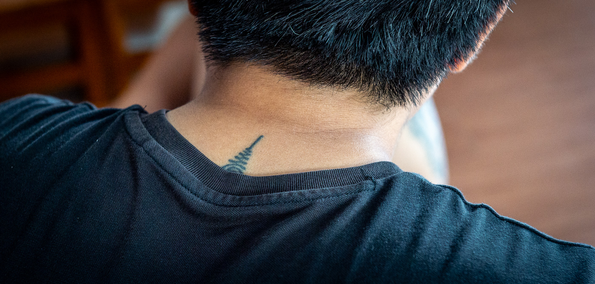
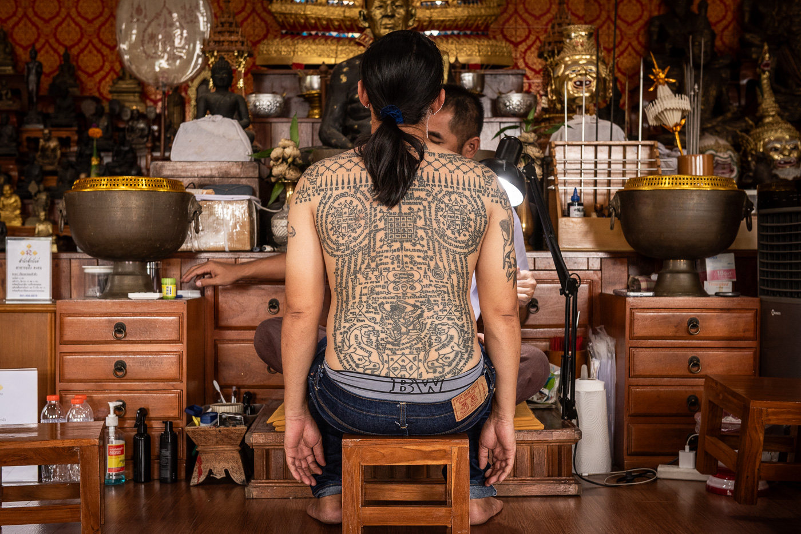
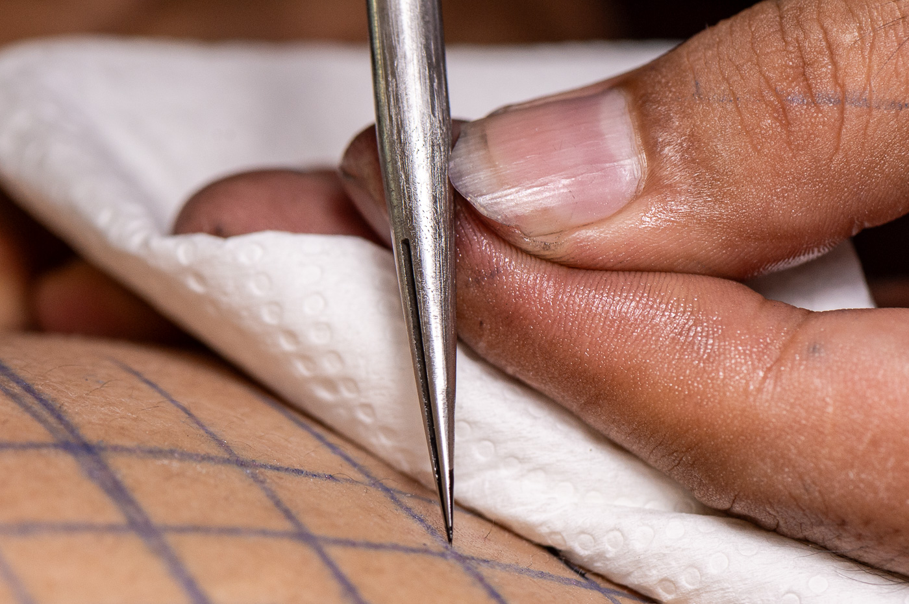

Walk around Thailand long enough and you start noticing the tattoos. The old man at the barbershop. The guy in front of you at the 7-Eleven with the points of a geometric tattoo showing above the back of his t-shirt. Once you know what you're looking at, you see it everywhere. This workshop puts you inside the ceremony where it's still being made.

The yantra as a concept is ancient, rooted in Hindu and tantric practice across South Asia. Tantra, in this context, refers to a body of esoteric Hindu and Buddhist texts dealing with ritual, sacred geometry, and the concentration of spiritual energy, not the Western association with sex, which is a misreading of an entirely different branch of the tradition. Yantras are geometric diagrams used as instruments of meditation and spiritual focus. The word itself is Sanskrit and means something closer to tool or machine than symbol. At some point around the third century, that tradition moved into mainland Southeast Asia, where it merged with existing animist beliefs and later with Buddhism. The practice of tattooing the designs onto the body rather than wearing or displaying them is specific to this part of the world and found nowhere else.
The tradition moved into the Ayutthaya Kingdom and merged with Theravada Buddhism, animist practice, and a warrior culture that used these inscriptions as functional protection. By the time of King Naresuan in the late 1500s, soldiers went into battle wearing shirts covered in yantra designs. The tattoos were not decorative. They were tools.
For most of the tradition's history in Thailand, they stayed that way, and the people who had them reflected that. Warriors, fighters, Muay Thai boxers, gang members, people in dangerous occupations. Sak Yant carried a social stigma inside Thailand that most outsiders don't know about. Middle-class Thai people largely avoided them. The tattoos signaled something about the life you led.
What changed that was a specific master and a specific moment. Ajarn Noo Kanpai, one of the most respected practitioners of the modern era, deliberately created new designs intended to broaden the tradition's appeal and shift its association away from the criminal fringe. On April 23, 2003, he tattooed Angelina Jolie, and the image went around the world. The effect was felt inside Thailand as much as outside it. Thai people who would not previously have considered these tattoos began getting them. The tradition opened up in both directions.
The designs that became globally recognizable through that moment are the ones you will find everywhere now. At least one of the most common, the Ha Taew, was created by Ajarn Noo himself.
This workshop photographs a part of the tradition that predates all of that. The designs are older, the lineage is less visible, and the practice continues exactly as it would without a camera in the room.

Sak Yant sits inside Thai occult tradition, ไสยศาสตร์ (sai-ya-sat). That does not mean it is separate from Buddhism. All of the Ajarns are Buddhist. Most of the people who get these tattoos are Buddhist. The chanting is drawn from Buddhist scripture. There are Buddhist elements in many of the designs. But the purpose of the tattoos, to bring the wearer protection, money, power, love, luck in travel, charm in speech, goes beyond what Buddhism alone teaches. Buddhism teaches letting go of those things. The tattoos exist specifically to get them. Thai people live with both of these things at the same time without contradiction. It is worth understanding that when you arrive.
Each yantra is a specific inscription with a specific purpose. The Ajarn who applies it is a practitioner, not an artist in the contemporary sense. The design is not chosen for aesthetic reasons. The kata, the sacred chant performed after the tattooing, is what activates it.
The offering plate presented before the session, the chanting, the Khong Khuen blessing that follows: these are not ceremony for the sake of atmosphere. They are the functional components of what is being done.
The history is deep and parts of it are contested. Rather than summarize it inadequately here, these two videos cover the ground better than any briefing document can. Watching them before the day means the time on site goes toward photography, not explanation.
The tradition: origins, practice, and what it means
A comprehensive overview covering the history, the role of the Ajarn, the ceremony, and what the tattoos are actually for. Watch this first.
Video by Stories in History. Used with appreciation.
The script: what the writing in every yantra actually is
The letters inscribed in every Sak Yant design are not Thai. They are Khom, an older script with Khmer origins used for sacred writing and religious texts. This video walks through the letters visually so you can begin to recognize them. Once you can see them, you see them everywhere in the room.
Video by Stuart Jay Raj. Used with appreciation.
Sak Yant is applied by hand using a metal rod with a needle tip. There is no electric equipment. The Ajarn controls the depth and spacing of each mark manually, working from memory through designs that may contain hundreds of individual characters of sacred script.
The offering plate, or khan, is prepared before the session and presented to the Ajarn. The presentation is part of the ritual. The blessing, Khong Khuen, is performed after the tattooing is complete. The Ajarn chants the kata associated with the design to activate it.
There are two needle types in common use. The distinction is worth knowing before you arrive.
Split-mouth needle. The older type. A single needle with a split tip, applied on a hand rod. This is the traditional form of the tool and is increasingly rare among practicing Ajarns today.
Flat cluster needle. Multiple needles bound together. Still hand-applied, but a more recent configuration. More commonly encountered now across the mainstream market.

The Ajarn this workshop is built around works with traditional tools, in a traditional workspace, with designs from a lineage that most people, Thai or foreign, have never encountered in person. He does not have a large public presence and was not found through the normal channels.
The ceremony runs as it would without photographers present. Nothing is staged or directed for the camera. You are documenting something that is happening regardless of whether you are there.
Van pickup from a central Bangkok meeting point. Early start. The day is long and the space has no air conditioning. Seating is on the floor. This needs to be understood before you commit.
A briefing before the session covers how to behave in the space, what to wear, and what to expect from the ceremony. Consent for photography has been established with the Ajarn and communicated to the people being tattooed.
You photograph freely during the tattooing session. No posed shots, no directed moments. You work the room the way you would on a documentary assignment.
The blessing ceremony, Khong Khuen, takes place after the tattooing. This is when the Ajarn activates the yantra through chant. It is a distinct photographic event from the tattooing itself.
No social media video. Still photography only. The exact location and the Ajarn's identity are not for public posting. The Bang Bon area of Bangkok is as specific as it needs to be. That's what keeps this available for future groups.
To be determined. Van rental and lunch are additional costs split across the group.
Small groups only. The space and the atmosphere set the ceiling. Bookings by contact only.
Your camera. Covered shoulders and knees. Water. Patience for a long day in a warm room.
Reach out via Instagram or Line. Describe what you shoot and what draws you to this. Spots are not first-come.